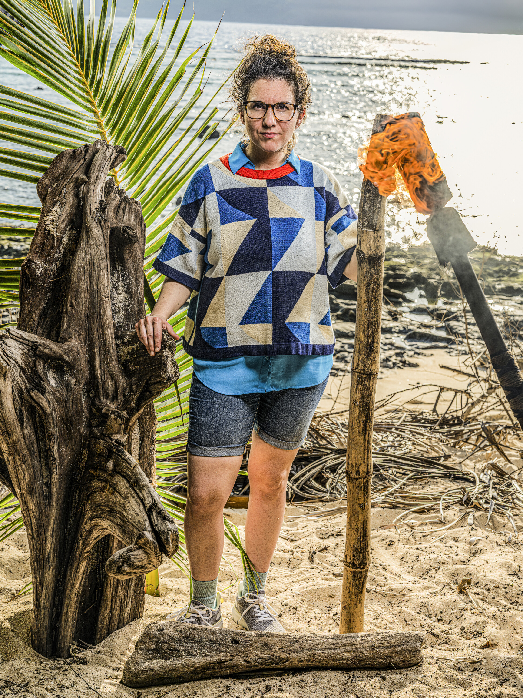

Aubry Bracco

Episode 1
Aubry is currently on the outside of the majority alliance. Genevieve approached her saying "I think you're very dangerous" and proposed a "dynamic duo," but Aubry didn't trust it and feared an "I get you before you get me" situation. She's playing cautiously with her guard up.
Episode 2
Aubry received Christian Hubicki's Boomerang Idol from Cila — a cross-tribal gift meant to build trust between superfan strategists. However, Genevieve led a full bag search at camp looking for an idol on Aubry, which came up empty. The suspicion around Aubry is growing, but she now has real protection. Vatu won immunity again.
Advantages
- Boomerang Idol — Gifted by Christian Hubicki (Cila). Good through Final 5. If Aubry is voted out without playing it, the idol returns to Christian.
Alliances
On the outs but now armed. The majority alliance (Q, Colby, Genevieve, Stephenie, Rizo) views her with suspicion, but her Boomerang Idol gives her real protection. A swap could separate her from enemies and give her a fresh start.
About
Aubry Bracco made her debut on Kaoh Rong (Season 32), where she used her wit to outplay competitors and finish as runner-up. She returned for Game Changers (Season 34) and Edge of Extinction (Season 38) but couldn't replicate her deep run. Since her last Survivor appearance, Aubry has focused on building a new career and family, stepping away from "game mode." She wants to be someone's "pleasant surprise" this time around and has learned to adapt from each game she plays.